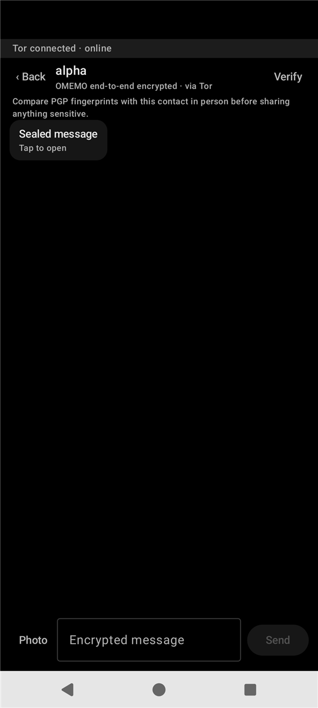

Encrypted chat
Messages travel over Tor and are end-to-end encrypted. Contacts are added by username, so there are no phone numbers and no email.
Early development, test builds only
Three apps you need, one you might. Everything encrypted. Nothing to sell. An Android system stripped back to what private communication actually needs, built so that even the people running it cannot read your messages.
Free and open source. Runs on the Google Pixel 6, 7, 8, 9 and 10. No phone number. No account recovery. No analytics anywhere, including on this page.

Every app that could leak something has been taken out of the system: not hidden, not disabled, removed from the image.
Messages travel over Tor and are end-to-end encrypted. Contacts are added by username, so there are no phone numbers and no email.
Tor Browser, and nothing else. There is no second browser quietly syncing history somewhere.
Photos stay on the phone. When you send one, its location and camera details are stripped off first.
Cake Wallet comes on the phone, for people who want to hold or spend Monero without a bank or an exchange account. Open it and it is yours; ignore it and it does nothing. We never create a wallet, never see a seed and never touch the money.
The wallet is the one app here that talks to something other than our server and the Tor network: it connects to a Monero node of your choosing, which sees that a wallet asked it something, as any Monero wallet must. Everything else on this phone goes over Tor. If that matters to you, do not use it, and it will sit there doing nothing.
Four steps, and the server is only ever the third one.
Before anything leaves, the message is sealed to your contact's device keys. Only their phone holds the key that opens it.
The app talks to nothing directly. Even the name lookup goes through Tor, so the server never learns where you are.
The server moves an encrypted blob between two accounts. It keeps no archive of what it moved.
Messages arrive sealed. Your contact taps to open, so nothing sensitive sits on screen when the phone is picked up.

Hold one button for three seconds. The phone erases itself and returns to factory settings. No confirmation dialog, no waiting on a network.
The phone has a lock screen, and the app has its own PIN and locks itself whenever you leave it. The app refuses to open on a phone with no lock at all.
Every account has a fingerprint and a QR code. Compare them face to face once, and you know who you are talking to from then on.
Messages and contacts live in an encrypted database whose keys are sealed by the phone's security chip.
Screens from the current build.


Privacy claims are worth nothing without the uncomfortable half. Here is both.
A privacy claim is worth exactly what someone else can verify. This is where each part stands today. Nothing is marked done until it is.
Every line of the app, the system changes and the server module is public under GPL-3.0.
The work happens in the open, so fixes and mistakes are both visible as they are made.
Every release publishes its SHA-256, and the browser installer will not use a download that does not match it.
You will be able to rebuild the phone image from this source and get byte for byte the same result, so nobody has to believe our copy is honest.
Updates will be signed with release keys generated and kept offline, so a phone accepts nothing that did not come from us.
Once release keys exist the bootloader locks, and the phone checks its own system on every start and refuses to boot if anything has been altered. Test builds today leave it unlocked, and say so.
Keys sealed by the phone's secure hardware, and a way for a phone to prove to you that it is running the real, unmodified OBSIDIAN.
No, and that is deliberate. Your keys and password exist only on your phone. If it is wiped or lost, that account ends and you register a new username. Nothing is held anywhere for an attacker, or us, to hand over.
No. The dialler and messaging apps are removed from the operating system. Calls and SMS travel through the mobile network, where they are logged and interceptable.
A phone number identifies you for life and links to everything else. A username on this phone links to nothing.
Because you do not have to take our word for it. Every line of OBSIDIAN is open source under the GPL-3.0 licence, so any security researcher can check exactly how it works, including the section above on what the server does and does not see. Privacy you have to take on trust is not privacy.
No. It is in early development. Current builds are test builds, which means they are signed with test keys and the phone's bootloader stays unlocked. They are for evaluation, not for protecting anyone yet.
The installer puts OBSIDIAN on a supported Pixel from your browser in about twenty minutes. The source is public, so nothing here has to be taken on trust.